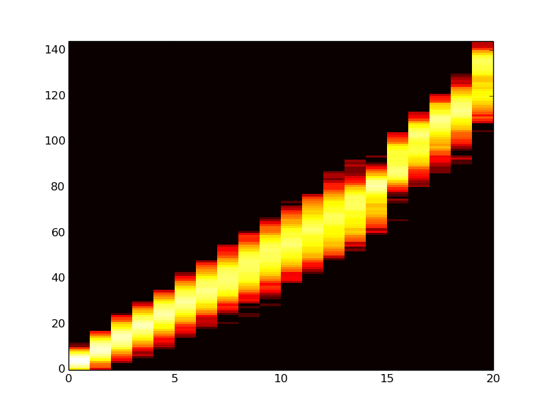

Week of June 30, 2014
Monday, Jun 30, 2014
Log 08:10PM
On a plane. So, I sent Charles an email this morning, to the effect that I intend to add event-based reproductive isolation.
- create event to segregate the birth chamber and birth zones.
- centrally controlled via a single event and class
- replace the lineage birth-chamber segregation code with the isolation zones.
- Add support for using any divide instruction that uses sex. This means that div-sex-MSL will no longer be required. Take it out.
- Initially, only include support in the mating types birth chamber. Add support for different birth chamber handlers at a later time.
- replace birth method 14 code with code that checks for the event-driven isolation setting.
- Every isolation event replaces the previous one.
- Isolation events, at least initially, will only support the inclusion of a number of birth zones, just like birth method 14
- Remove zone count avida.cfg option.
- Remove birth method 14 from avida.cfg, since it would now be redundant.
- Add option to track gene-flow between lineages.
- Add event to print out gene-flow data in current population
- Note to develop baseline for this data, set lineages, but don't separate the population. See what the baseline geneflow data is.
OTHER TODO
- figure out how to compile and run debugger in Sublime Text. Look for a tutorial or a package
Tuesday, July 1, 2014
Log (earlier)
In the car on the way to the meeting, thought about how to modify the mate selection stuff to make it multiple traits. Maybe use the multiple nop idea to set a trait.
So, I want two dimensions, configurable trait to look at, and the degree. So, setting a value of arbitrary display trait.
Stickleback Meeting 1:05p
Drosophila Paper
- Measuring fitness as response variable
- Experimental design - interaction of sexual selection and natural selection
- hypotheses - if you have sexual selection, you'll adapt more quickly (the good genes theory) because sexual selection is supposed to clear deleterious alleles. If you're selecting on a condition dependent trait, the ones in best condition
Thoughts
- add proper fitness measure (# of offspring produced)? Look at this! Look at what a precise definition is.
Lab Meeting 3pm
Not talking about anything useful. Angrymaking.
Thursday Jul 3, 2014
Log 2:28p
Surprise, surprise, Charles's suggestion is spurrious again. I liked him better when he didn't take an interest. He keeps sending me down useless bunnytrails.
Ok, what I need to do is ADD a method to drop a geographic wall, similar to the birth zones thing.
- no mating across the wall
- no birthing across the wall
Friday Jul 4, 2014
Log 9:13p
So, I was able to squeeze some programming in yesterday. So far, I am enjoying using Qt Creator. It's just a basic IDE, and it reads cmake files and compiles per the rules, and hooks into the debugger appropriately, etc.
Below is a summary of what's in the branch.
Key features:
- Geographic Isolation
- <DONE> MATE_BY_BIRTH_ZONE config option
- enforces that sexual reproduction select mates from a pool based only on the birth zone
- If there's only a single zone, well, it's all a big pool, so don't worry about it.
- TODO - add support to all other mating types.
- <DONE> BIRTH_ZONES config option
- You can only deposit offspring in the zone you are born in.
- Initially implement as addendum to BIRTH_METHOD 4 (random well mixed)
- TODO - add support to other birth placement types (BIRTH_METHODs)
- TODO - make birth zone dimensions and shapes be configurable
- Test that it hasn't disrupted placement vs the previous.
- Gene-flow measurement
- [TODO] PrintLineageCounts (modifications)
- Print the lineages and their percentages in the populations.
- Print the average level of mixture in the population.
Other code changes that need to be put in the branch
- <DONE> remove BIRTH_METHOD 14 (add birth zone support to BIRTH_METHOD 4)
- <DONE> remove Raise and Lower Barrier events.
- They aren't needed. Use SetConfig events instead.
- [TODO] add fractional (ratio) lineage tracking while putting the info in the offspring.
Previous changes that will remain in the branch
- SetLineageRange event. Useful for tracking
- new instruction div-sex-MSL for lineage-based mate select
- ALLOW_MATE_SELECT and div-sex-MS and div-sex-MSL working with MATING_TYPES 1
- partial phenotype classification.
The test configuration must be as follows
- Config:
- BIRTH_METHOD 4
- BIRTH_ZONES 2
- ALLOW_MATE_SELECT 0
- MATE_BY_BIRTH_ZONE 1
- MATING_TYPES 1
- DISABLE_GENOTYPE_CLASSIFICATION 2
- Events:
- InjectRange with males and females, in lineages 5 and 7
- @5k updates, SetConfig BIRTH_ZONES 1
- PrintLineageCounts
- Instruction Set
- Mating Types division instruction (div-sex-mating-types)
Log 2:03a
I've got the changes made, and preliminarily tested in the debugger. As an aside, the debugger with Cmake and Qt Creator was a little esoteric. I had to go in to the project tab (left side), and create a bunch of separate cbuild directories, passing the appropriate directives to each one (no arguments for release, Debug for debug, and RelWithDebInfo for optimized compilation plus debug symbols), and then re-run cmake. Annoying. But, now my breakpoints work, and my variable values are populating. The debug interface seems pretty standard and pleasant. So far, I have to say, I'm pretty pleased with Qt Creator. It's exactly what I was looking for. The only thing missing (tabbed editing) is made up for by the little window with the list of open files on the left, that I can just click on, and it goes to the right place. It's nice.
Anyway, it's compiling, and I'm going to set it going for the 10k preliminary run, and make sure nothing is going awry. To be clear, I've already observed a couple of lineage anomalies in the population dumps (multiple lineages in a single genotype), which I think are collisions. :/ I'll have to watch what happens when they start mating with each other after the wall drops.
Log 2:23a
Ok, Initial 10k run is complete. Let's try generating a flame graph and see what happens.
And... oops. I don't have matplotlib installed on this computer. :/
For the record, easy_install matplotlib fails to find the freetype headers. Solution is to add the links yourself
rosiec@Weir:~$ sudo ln -s /usr/local/opt/freetype/include/freetype2 /usr/local/include/freetype
Found at: http://stackoverflow.com/questions/20572366/sudo-pip-install-matplotlib-fails-to-find-freetype-headers-os-x-mavericks
Log 2:43a
Well, fuck you too. Cant get it to work on my local machine. So, I made the graph on the hpcc.
caninoko@dev-intel14:~/tmp/testrun$ python ~/research_scripts/graph_generation/flamegraph/flamegraph.py $i"_"flamegraph.png 14 5 detail-?00.spop* detail-??00.spop* detail-???00.spop*

Not exceptionally informative, but hey. At least it did a thing. And you can kinda see the sweep that happend right around then. So, yay! Um.
Next steps:
- Implement the enhanced PrintLineageCounts
- Add fractional lineage tracking to offspring.
- Add the printing of the lineage counts.
- Within a lineage, print the average outside of lineage fraction
- overall population, print the average blending level (is the population very blended, or is it segregated)
- thing about this. I had some thoughts earlier, but they seem to have left my head. Key bit, though is that we can't categorize biracial as being primarily one or the other in the first generation of hybridization.
- think about how mates are being chosen. look at the data outputs to see if mates are being chosen randomly. Like, are the females being very successful at targeting, or is everything just so far off that it might as well be random?
- what is the gender balance? More males? (hope so!)
- add resources to make sure sweeps don't happen willy nilly.
- resources for one half are different from resources in the other half, resulting in adaptation...?
- Let them evolve and adapt together to all resources/tasks, and evolve to use the choosyness, and then drop the wall, thereby changing the adaptation profile